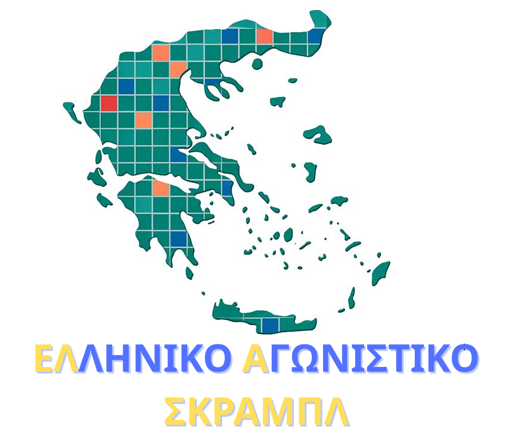
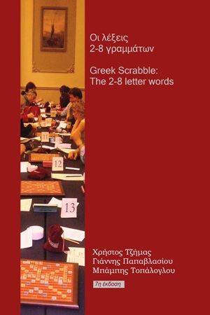

Ελληνικό Αγωνιστικό Σκραμπλ
Αναγραμματισμός λέξεων
Έλεγχος λέξεων και αναγραμματισμοί για το παιχνίδι.

Πηγή λεξικού
«Οι λέξεις 2-8 γραμμάτων»Χρήστος Τζήμας, Γιάννης Παπαβλασίου, Μπάμπης Τοπάλογλου · Άδεια CC BY-NC-ND
Έλεγχος και αναγραμματισμός
Γράψε μία λέξη για έλεγχο.
Αναγραμματισμός από 2–8 γράμματα.
Το * χρησιμοποιείται ως μπαλαντέρ στον αναγραμματισμό (έως 2 *).
Φόρτωση λεξικού…